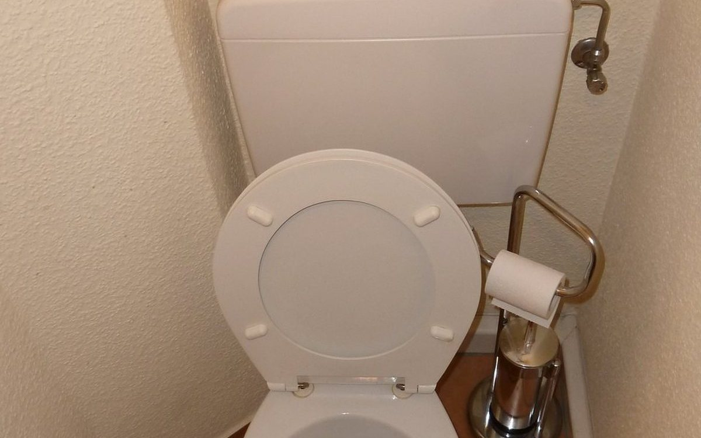

Caixa acoplada vazando água no vaso: como identificar a causa e regular com segurança

Aquele fiozinho contínuo de água escorrendo no vaso sanitário parece inofensivo, mas pode desperdiçar mais de 30 mil litros de água potável por mês e disparar o valor da conta. Na maioria dos casos, o defeito não exige quebrar parede: trata-se apenas de uma boia desregulada ou da borracha de vedação (obturador) com resíduos.
1. O que você vai aprender neste guia
- Como abrir a tampa da caixa acoplada com cuidado para não lascar a cerâmica.
- O teste do corante ou papel para confirmar se o vazamento é constante.
- Como distinguir vazamento pelo cano de extravasor (ladrão) de vazamento pela borracha de saída (obturador).
- Como regular o parafuso da boia plástica e limpar detritos do vedante.
- Os sinais de rachadura na louça ou conexões flexíveis que exigem encanador.
2. Alertas de segurança antes de mexer
Cuidado com o peso da tampa de louça: a tampa de cerâmica é pesada, escorregadia quando molhada e quebra facilmente se bater na borda da pia ou no piso. Apoie-a sempre em cima de uma toalha seca no chão.
Feche o registro local primeiro: localize o registro de pressão na parede ou a torneirinha do flexível e feche antes de mexer em qualquer torre ou haste.
Nunca force as roscas plásticas: os mecanismos modernos de caixa acoplada são de PVC/poliacetal. Apertar com alicate de pressão ou força excessiva racha as porcas e causa inundações no banheiro.
3. Materiais e ferramentas necessários
- Pano seco e toalha velha para apoiar a tampa no chão.
- Chave de fenda simples ou chave Phillips pequena (apenas para ajuste do parafuso da boia, se necessário).
- Uma esponja macia ou escova de cerdas suaves.
- Um pouco de vinagre de álcool ou detergente neutro para limpar depósitos de minerais do obturador.
- Luvas de borracha para proteção individual de higiene.
4. O teste rápido: de onde está vazando?
Retire com calma o botão superior de acionamento (alguns são rosqueados à mão no sentido anti-horário) e erga a tampa de louça. Olhe para o nível da água dentro da caixa quando ela estiver cheia:
- Cenário A — A água está caindo por dentro do cano central (ladrão): a torre de entrada não está fechando a tempo porque a boia está regulada muito alta ou a válvula de entrada está com sujeira.
- Cenário B — O nível da água está abaixo do topo do tubo, mas o vaso continua escorrendo: o problema é embaixo, na comporta de borracha (obturador/flapper) da torre de saída, que não está vedando o fundo.
- Cenário C — Corrente plástica esticada demais: se a correntinha que liga o botão ao obturador estiver curta, ela mantém a tampa de borracha ligeiramente levantada o tempo todo.
5. Passo a passo para regular e resolver
- Ajuste a folga da correntinha: solte o gancho da corrente e prenda em um elo que deixe uma folga de cerca de 1 centímetro. A borracha precisa assentar totalmente no fundo quando a caixa estiver em repouso.
- Regule o nível da boia (para o Cenário A): localize a haste plástica com parafuso no topo da torre de entrada. Girando esse parafuso no sentido anti-horário (ou apertando a presilha lateral), abaixe o flutuador para que a água pare de entrar cerca de 2 centímetros abaixo da boca do ladrão.
- Limpe o anel do obturador (para o Cenário B): feche o registro de entrada e acione a descarga para esvaziar a caixa. Solte as orelhas laterais da tampa de borracha (obturador) e passe uma esponja com água para tirar o limo e os resíduos de calcário que impedem o assentamento perfeito.
- Verifique se a borracha está deformada: se a borracha estiver ressecada, ondulada ou esfarelando ao toque, apenas a limpeza não resolverá — leve a peça gasta a uma loja de hidráulica para comprar um obturador compatível com a sua marca (Deca, Celite, Roca, Astra ou Censi).
- Abra a água e faça o teste final: abra o registro, deixe a caixa encher até o corte automático e verifique se a entrada cessa completamente sem ruído de chiado contínuo e se o espelho d'água do vaso permanece imóvel.
6. Erros comuns para evitar
- Usar pedras sanitárias cloradas dentro da caixa acoplada: aquelas pastilhas azuis ou blocos de cloro aceleram a degradação química de borrachas e plásticos internos, reduzindo a vida útil do vedante de 5 anos para poucos meses.
- Apertar parafusos da base da caixa contra a bacia: se o vazamento for por fora (água pingando no chão entre a caixa e o vaso), nunca aperte as porcas de fixação com força brutal, pois a louça racha instantaneamente.
7. Quando parar e chamar um encanador profissional
Chame um encanador especializado quando:
- A água estiver vazando por baixo da caixa, molhando o chão do banheiro através dos parafusos de fixação ou da junta de esponja de vedação da bacia.
- O engate flexível metálico estiver enferrujado, ressecado ou vazando na junção da parede.
- A louça da caixa apresentar trincas ou fissuras estruturais (risco grave de rompimento repentino).
- O mecanismo de entrada não fechar mesmo com a boia puxada para cima manualmente (exige substituição da torre completa com desmontagem hidráulica).
8. Prevenção e conservação
- Faça uma inspeção visual a cada 6 meses: coloque 3 gotas de corante alimentício ou café na água da caixa acoplada à noite; se pela manhã o fundo do vaso estiver colorido sem ninguém ter dado descarga, há vazamento invisível começando.
- Mantenha a tampa sempre bem encaixada para evitar a queda acidental de objetos (saboneteiras, frascos de perfume ou escovas) no interior da caixa.
Ferramentas e kits para manutenção hidráulica
Transparência: Selecionamos abaixo opções com ótimo custo-benefício no Mercado Livre (links de afiliado, sem acréscimo de valor para você) para manutenções residenciais seguras.
Kit Jogo de Ferramentas Aço Carbono Titanium 11 Peças
Kit prático com chave de fenda, Phillips e alicate isolado para regulagens leves em mecanismos sanitários e registros.
Kit Ferramentas 46 Peças Quicko (Catraca, Fenda e Soquetes)
Maleta com soquetes compactos que facilitam o alcance e reaperto de conexões em espaços apertados de banheiros.
Precisa equipar a sua caixa de ferramentas para manutenções residenciais sem gastar demais? Acesse as análises detalhadas no nosso site parceiro: Portal Achado Reviews e o guia comparativo Melhores Ferramentas e Parafusadeiras Custo-Benefício.
9. Fontes e referências consultadas
- ABNT NBR 15097-1: Aparelhos sanitários de cerâmica — Caixas acopladas e bacias sanitárias — Requisitos e métodos de ensaio para estanqueidade e volume de descarga.
- Manuais de Instalação e Manutenção de Válvulas e Caixas Acopladas (Deca, Astra, Censi): Instruções técnicas sobre ajuste de altura do nível de transbordamento e substituição de comportas de borracha.